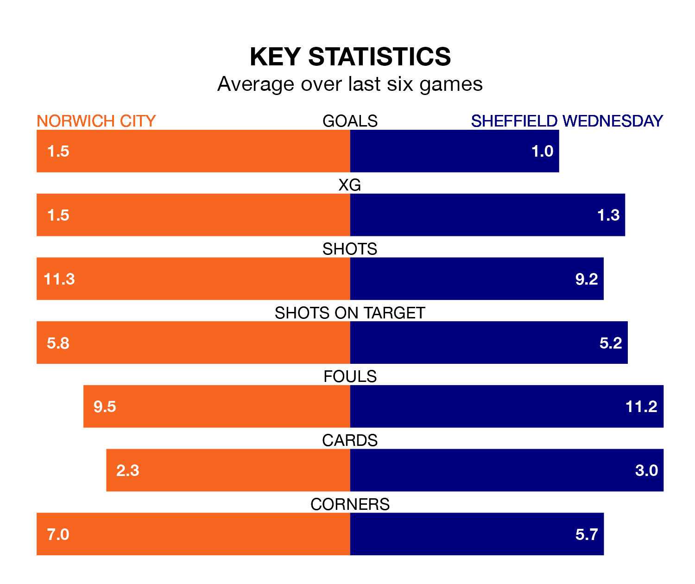

Struggling Sheffield Wednesday face Norwich City away at Carrow Road on Wednesday looking to build on a win in their last league outing.
After securing all three points with a 1-0 victory over Stoke City on Saturday, the Owls sit 23rd in the Championship.
They travel to play a Norwich side 13th in the standings, who were held in their last match, 0-0 against Preston North End.
With 13 goals in 20 games so far this season, Wednesday are the league's lowest scorers with 0.7 goals per game. And they are conceding more than average, letting in 31 goals at a rate of 1.6 per game.
Norwich, meanwhile, are above average scorers, with 1.7 goals per game, compared to a league average of 1.4. They have conceded 1.8 goals per game.
In the last 10 years, Norwich and Wednesday have played each other on 10 occasions. Norwich won five of them, Wednesday two, and they drew three times.
On average, the Canaries scored 1.7 goals and the Owls 1.5 in those matches.
Their last meeting was on March 14 2021, when Norwich won 2-1 away.
City's Gabriel Sara is among the league's most creative players, racking up eight assists in 20 appearances so far this season, and holding second spot in the Championship's assist charts.
For the Owls, Josh Windass, Anthony Musaba and Di'Shon Bernard have set up the most goals, having laid on two assists apiece to date.
The Canaries are in mixed form in the Championship, with three wins and a draw from their last six games.
With two wins and a draw over that period, the visitors' form is worse – they have taken seven points from 18, compared to the home team's 10.
Wednesday's match will be refereed by Leigh Doughty, who has taken charge of five Championship games so far this season, issuing one red card and booking 19 players. He has not awarded any penalties.
He is yet to oversee a match featuring either Norwich or Wednesday this season.
